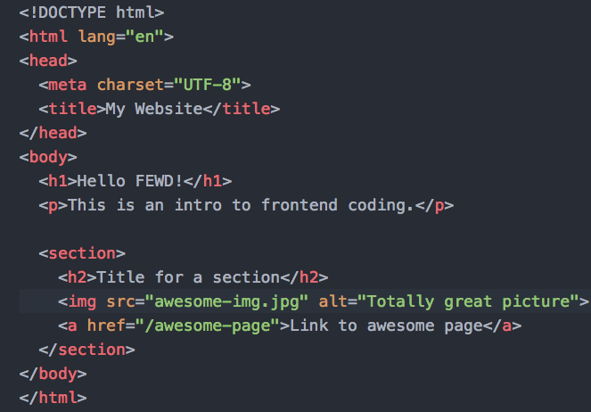
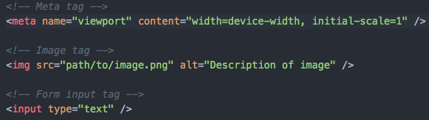
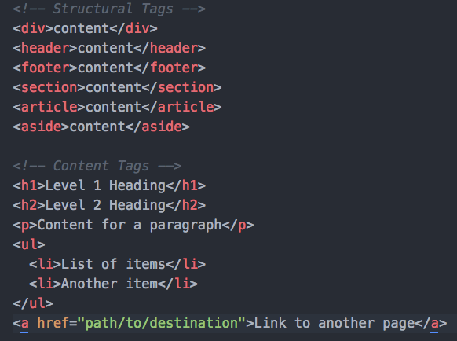

Introductions!
Basic workflow
- Lesson
- Assignment on Schoology
- Review
README.mdfor assignment - Push assignment to Github
- Feedback
Resources
- Further reading (websites, books etc)
- Bonus materials
- Instructors!
(An extremely) Brief History of the Internet
-
50s/60s - ARPANET created in America to enable communication between two computers across a network.
-
70s - Transmission Control Protocol and Internet Protocol (referred) to as TCP/IP created to allow the separate mini-networks to communicate with each other.
-
90s - Tim Berners-Lee introduces the World Wide Web, which allows information to be freely accessible by anyone with a network connection
Wayback Machine
Travel back in time and see what your favourite sites looked like when they were first launched by checking out the Way Back Machine
How it all works
-
Request is made from the client (laptop/computer) to view a page.
-
Routers direct the request to the necessary server.
-
The server deals with the request and sends back a response in a series of 'packets'. Each packet is sent on the quickest route possible (not always the same) to reach the computer.
-
As these packets can arrive at different times, each one contains instructions for the computer in order to put them back together to create the web page.
-
The browser then renders the web page.
Languages
We need languages that to enable us to view these pages and the different media types on them.
Enter the Big 3 (*for frontend)
- HTML
- CSS
- Javascript
What do they each do?
HTML Basics
What is HTML?
HTML is a markup language, which means that it is designed for the definition, presentation and formatting of content on a web page.
Syntax

Self-closing tags
The exception to the previous HTML syntax example are elements that do not require inner content.
These are known as self-closing tags.
HTML attributes

Used to target HTML elements (IDs, classes) for styling or JavaScript interaction.
They can also be used to add data to elements, set values for input elements and provide paths to files, among many other uses.
A useful resource for HTML attributes can be found here.
HTML tags
Here are a small selection of HTML tags:
Introduction of HTML5
The first draft of the HTML5 specifications were submitted in 2008.
Final completion of the specifications happened in 2014 and HTML5 is now recommended by the World Wide Web Consortium (W3C) as the standard for HTML.
The browser detects that a document is HTML5 due to the <!DOCTYPE html>
declaration at the top of each template.
New HTML tags
With the release of HTML5 came a new set of tags that could be used to structure code.
These tags provide the browser more semantic information on how your pages are layed out and also the type of content included.
New HTML5 tags include section, article, aside, header, footer. A more exhaustive list can be found at HTML5 Doctor.
Some Quick Notes
- Code Indentation
- Opening a project in Sublime Text
- File naming
- Spaces in HTML attributes
- Commenting code
Time for a lab!
Task: complete the full HTML markup for our delicious cookie recipe.
We'll run through how to set up the HTML document together first.
Key Takeaways
-
The World Wide Web is a network of connected computers
-
HTML is a markup language that adds structure to content
-
HTML5 is the latest stable version of HTML
-
HTML 'tags' are used to differentiate content, also helping provide semantics to a page